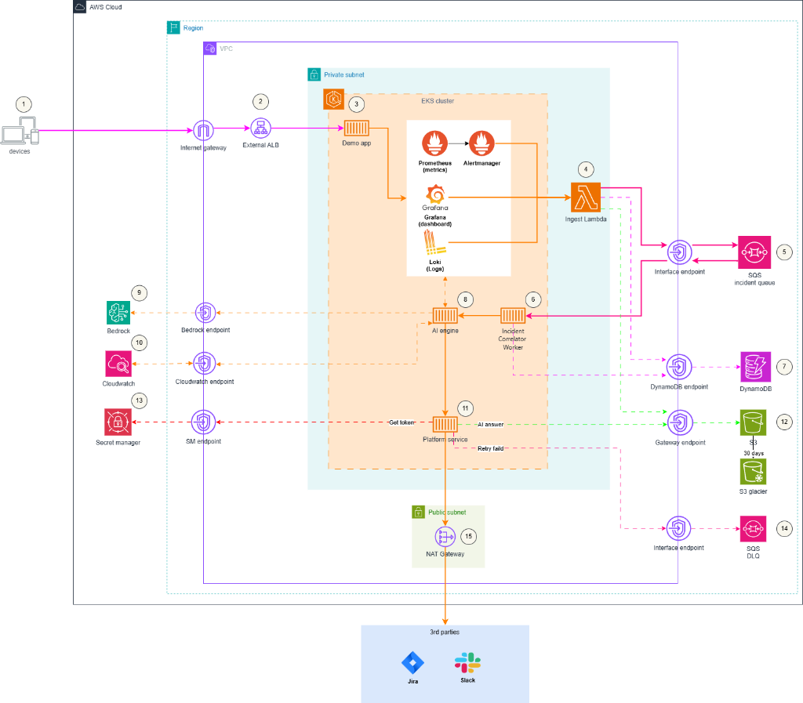

GIẢI PHÁP TRIAGE HUB AIOPS
Nền Tảng Hỗ Trợ Vận Hành & Tự Động Hóa Chẩn Đoán Sự Cố
1. Bối Cảnh Dự Án (Project Context)
Quy mô & Mô hình hoạt động
- Hệ thống B2B SaaS phục vụ khoảng ~20,000 người dùng hoạt động đồng thời.
- Kiến trúc phân rã phức tạp gồm ~50 microservices liên kết.
- Đội ngũ kỹ sư trực vận hành on-call cực kỳ mỏng: Chỉ có 8 engineers hỗ trợ toàn bộ hệ thống.
Thực trạng & Vấn đề nghiêm trọng
- Nhận lượng cảnh báo khổng lồ: Trên 50 alerts/tuần.
- Quy trình điều tra hoàn toàn thủ công: Tra cứu logs, query metrics, viết ticket Jira, ping Slack tìm owner.
- MTTR tăng cao: Tốn trung bình 30-60 phút để tìm ra nguyên nhân gốc rễ cho mỗi alert.
- Không đo lường được: CTO không có số liệu thực tế để báo cáo hiệu quả vận hành cho Ban giám đốc mỗi quý.
2. Nỗi Đau & Vấn Đề Của Khách Hàng (Customer Pain Points)
Quá Tải Cảnh Báo
Alert Fatigue & Storms:
Khi một dịch vụ cốt lõi bị sập, hệ thống sinh ra hàng tá alert triệu chứng cascading. Đội on-call bị ngập trong thông tin nhiễu, dẫn đến bỏ lỡ cảnh báo critical thực sự.
Rò Rỉ Dữ Liệu Chéo
Cross-Tenant Leakage:
Nguy cơ cực lớn khi AI Engine trong lúc chẩn đoán RCA tự động truy cập logs/metrics của tenant này nhưng lại vô tình đọc được dữ liệu nhạy cảm của tenant khác.
Onboarding Thủ Công
SLA chậm trễ:
Việc thiết lập môi trường cô lập, các endpoint giám sát và phân quyền bảo mật cho một khách thuê (tenant) mới tốn nhiều ngày cấu hình thủ công bằng tay.
Độ tin cậy kém của luồng sự cố
Các cảnh báo thô gửi đi theo cơ chế fire-and-forget trực tiếp tới Slack/Jira mà không qua hàng đợi trung gian dễ bị thất lạc khi mạng lỗi hoặc API đầu xa bị rate-limit.
3. Chỉ Tiêu Phi Chức Năng & Mục Tiêu SLO
Chỉ tiêu Hiệu Năng & Độ Tin Cậy
- SLO P99 Latency (Routing): Cấu hình hạ tầng điều hướng (ALB + Ingress Controller) có thời gian trễ dưới < 1000ms.
- E2E Alert ➔ Jira Ticket: Tổng thời gian từ khi Alert kích hoạt đến lúc xuất hiện Ticket Jira đầy đủ RCA phải dưới < 30 giây.
- SLA Availability: Cam kết EKS Control Plane đạt độ sẵn sàng ≥ 99.95%. Nền tảng on-call hoạt động bền bỉ.
Chỉ tiêu Bảo Mật & Co Giãn (NFRs)
- Tenant Data Isolation: Cách ly dữ liệu chéo 100%. Mọi đường dẫn dữ liệu (SQS, DB, S3, Loki) bắt buộc kiểm soát bằng `tenant_id`.
- Tự động Onboarding: Rút ngắn thời gian khởi tạo môi trường cho tenant mới xuống dưới < 30 phút qua IaC tự động.
- Xử lý quá tải (Burst Handling): HPA cấu hình tối thiểu 2 pods, co giãn tối đa 10 pods trên Prod, kích hoạt ngay khi CPU chạm ngưỡng 75%.
4. Kiến Trúc Giải Pháp: EKS-Native AIOps Platform
Tại sao chọn EKS thay vì Serverless?
EKS không chỉ đóng vai trò container hosting, mà nó cung cấp một mô hình Metadata nhất quán (Consistent Workload Model) cho toàn bộ hệ thống AIOps:
- Namespace: Phân tách vật lý ranh giới tenant/env.
- K8s Labels & Annotations: Lưu giữ các nhãn `tenant_id`, `service`, `env`, `version` trực tiếp trong workload.
- Telemetry Context: Khi logs/metrics được thu thập bởi Prometheus/Loki, các nhãn K8s này được đính kèm tự động. AI Engine chỉ query trong phạm vi nhãn của tenant bị lỗi.
Sức mạnh từ Hệ sinh thái Cloud-Native
- GitOps Controller (ArgoCD): Kiểm soát sai lệch cấu hình (drift detection) và tự động đồng bộ hóa.
- Bảo mật cấp Pod (IRSA / Pod Identity): Cấp quyền IAM chi tiết, tối giản đến từng Pod, không lưu key tĩnh.
- In-cluster Observability: Vận hành Prometheus Operator và Loki trực tiếp trong cụm, giảm hóa đơn CloudWatch đắt đỏ.
5. Sơ Đồ Kiến Trúc Hạ Tầng (Infrastructure Diagram)

Click vào sơ đồ để phóng to toàn màn hình. | Ranh giới bảo mật mạng: Sử dụng K8s NetworkPolicy cô lập giao tiếp mạng nội bộ của Pod AI, chặn hoàn toàn các kết nối ra ngoài phạm vi namespaces cho phép.
6. Ranh Giới Lưu Trữ & Sở Hữu Dữ Liệu
Thiết kế Cơ sở dữ liệu & Artifacts Store
- Chế độ On-demand DynamoDB: Tiết kiệm chi phí.
➔ Bảngidempotency: Chống trùng lặp alert.
➔ Bảngincident-state: Theo dõi tiến trình trạng thái sự cố. - S3 Object Lock (Bất biến): Lưu trữ snapshot payload alert thô, báo cáo RCA, bằng chứng logs/metrics phục vụ audit log 90 ngày.
- Quy tắc vàng CDO: DynamoDB tuyệt đối không lưu dữ liệu lớn. Chỉ lưu con trỏ (S3 URI) để tối ưu hiệu năng.
Ranh Giới Trách Nhiệm Rõ Ràng
CDO Team sở hữu Nền Tảng (Platform & Reliability):
Vận hành hạ tầng EKS, đường ống SQS FIFO, DB State, tích hợp Jira/Slack & quản trị IAM tối giản (least-privilege).
AIOps/AI Team sở hữu Logic Chẩn Đoán (RCA Inference):
Sinh chẩn đoán, đề xuất hành động. AI Engine chỉ nhận input đã chuẩn hóa và query logs/metrics theo quyền hạn giới hạn.
7. Đường Ống Cảnh Báo Đáng Tin Cậy (Resilient Pipeline)
Noise Control & Buffering
- Layer 1 - Alertmanager: Gom nhóm alert theo thời gian, ức chế (inhibit) cảnh báo phụ thuộc, cấu hình repeat interval để chặn spam.
- Ingest Lambda (Chống trùng): Webhook gửi đến Ingest Lambda check bảng
idempotency. Chống duplicate và chuẩn hóa metadata. - SQS FIFO Queue: Bộ đệm bền vững bảo vệ cảnh báo khỏi bị mất mát. Hỗ trợ hàng đợi lỗi DLQ (Dead Letter Queue) để cô lập poison messages.
Layer 2 - CDO Correlator & Human Gate
- Correlation (Gom nhóm chéo): Nhóm các alert triệu chứng từ nhiều dịch vụ khác nhau xảy ra cùng một thời điểm vào một Incident ID duy nhất.
- Gating AI Calls (AI Call Gating): Kiểm tra bảng trạng thái sự cố. Chỉ gọi AI Bedrock khi phát hiện incident mới hoặc có thay đổi nghiêm trọng, tránh lãng phí tiền API.
- Human-in-the-loop: AI chỉ đề xuất, con người nhấn nút xác nhận trên Slack để cập nhật/tạo thật Jira ticket.
8. Hệ Thống Giám Sát (Observability Stack)
Nền tảng của chúng tôi phân tách rõ ràng dữ liệu giám sát thông thường và luồng cảnh báo khẩn cấp để đảm bảo hiệu năng tối ưu.
Metrics (Chỉ số)
Prometheus Operator: Thu thập metric in-cluster của microservices.
CloudWatch Metrics: Đo lường các AWS services managed (Lambda, SQS backlog, DB throttles).
Logs (Nhật ký)
Grafana Loki + Alloy: Thu thập log ứng dụng trên EKS đính kèm metadata.
CloudWatch Logs: Lưu logs AWS services (Retention set 14 ngày để giảm chi phí).
Traces & Visual
OpenTelemetry: Đẩy traces về AWS X-Ray.
Grafana: Dashboard hợp nhất giúp SRE điều tra và AI query thông tin RCA.
9. Sơ Đồ Quy Trình CI/CD Phân Cấp (Hierarchical CI/CD)
.png)
Click vào sơ đồ để phóng to toàn màn hình. | Quality Gates: Từng giai đoạn (Sandbox ➔ Staging ➔ Prod) được kiểm soát bởi các hàng rào bảo mật tự động: Trivy (scan lỗ hổng), Cosign (ký số), và ArgoCD (GitOps sync).
10. Chiến Lược Triển Khai Canary & Tự Động Rollback
Chiến dịch Canary Progressive (Prod)
- Thay thế cấu hình
DeploymentbằngRolloutCRD (Argo Rollouts). - Bảng phân chia traffic:
➔ Giai đoạn 1: Chuyển 25% traffic đến bản Canary. Dừng 10 phút.
➔ Giai đoạn 2: Tăng lên 50% traffic. Dừng 10 phút.
➔ Giai đoạn 3: Tăng lên 75% traffic. Dừng 10 phút.
➔ Giai đoạn 4: Hoàn thành 100% traffic về bản mới. - Quy trình chạy song song với HPA (min 2, max 10 pods) để gánh tải.
Giám sát & Tự động rút lui (Auto-Rollback)
- Chạy
AnalysisTemplatetruy vấn metric Prometheus thời gian thực. - Tiêu chí hủy bỏ (Abort Criteria):
➔ Tỷ lệ lỗi Server (5xx) vượt quá > 0.5%.
➔ Độ trễ phản hồi P99 vượt quá > 1000ms.
➔ Điểm độ tin cậy trung bình của AI chẩn đoán < 0.5. - Thời gian Rollback: < 60 giây (Ngay lập tức cắt traffic khỏi bản lỗi, chuyển 100% về stable version).
11. Ước Tính Chi Phí Cố Định - Môi Trường Sandbox
Cấu hình tối ưu hóa chi phí cao: 2 Vùng sẵn sàng (AZs), us-east-1, Không sử dụng WAF/CloudTrail.
| Dịch vụ AWS | Tiêu chí tính phí | Số lượng / Baseline | $/Giờ | $/Tháng (730h) |
|---|---|---|---|---|
| EKS Control Plane | Phí quản lý cụm (Cluster fee) | 1 cụm | $0.1000 | $73.00 |
| EKS Worker Nodes | m7i-flex.large On-Demand |
2 instances | $0.1536 | $112.13 |
| EKS Disk (EBS) | Lưu trữ ổ đĩa gp3 EBS | 2 × 30 GiB | $0.0066 | $4.80 |
| VPC NAT Gateway | Phí duy trì NAT Gateway | 1 NAT Gateway | $0.0450 | $32.85 |
| VPC Interface Endpoints | Kết nối PrivateLink bảo mật | 8 endpoints × 2 AZs | $0.1600 | $116.80 |
| Secrets Manager & KMS | Quản lý secret và khóa KMS | 5 secrets + 1 KMS Key | — | $3.00 |
| VPC Gateway Endpoints | Điểm cuối S3 & DynamoDB | Gateway type (Miễn phí) | $0.0000 | $0.00 |
| TỔNG CHI PHÍ CỐ ĐỊNH / THÁNG | ~$0.465 | ~$342.58 | ||
12. Ước Tính Chi Phí Cố Định - Môi Trường Production
Cấu hình High Availability: Sẵn sàng cao trên 3 AZs, Kích hoạt AWS WAF chặn tấn công điểm cuối public.
| Dịch vụ AWS | Tiêu chí tính phí | Số lượng / Baseline | $/Giờ | $/Tháng (730h) |
|---|---|---|---|---|
| EKS Control Plane | Phí quản lý cụm (Cluster fee) | 1 cụm | $0.1000 | $73.00 |
| EKS Worker Nodes | m7i-flex.large On-Demand |
3 instances (1 per AZ) | $0.2304 | $168.19 |
| EKS Disk (EBS) | Lưu trữ ổ đĩa gp3 EBS | 3 × 30 GiB | $0.0099 | $7.20 |
| VPC NAT Gateways | Phí duy trì (1 NAT cho mỗi AZ) | 3 NAT Gateways | $0.1350 | $98.55 |
| VPC Interface Endpoints | Kết nối PrivateLink bảo mật | 8 endpoints × 3 AZs | $0.2400 | $175.20 |
| AWS WAF | Web ACL base cost + Rules | 1 Web ACL + 1 Rule | — | $6.00 |
| Secrets Manager & KMS | Quản lý secret và khóa KMS | 5 secrets + 1 KMS Key | — | $3.00 |
| TỔNG CHI PHÍ CỐ ĐỊNH / THÁNG | ~$0.715 | ~$531.14 | ||
13. Chi Phí Biến Đổi & Tác Động Của AWS Free Tier
Dự báo chi phí biến đổi hàng tháng dựa trên baseline **15,000 alert** (~2,500 cuộc gọi phân tích AI Bedrock):
Dịch vụ phát sinh chi phí
- Amazon Bedrock (Nova Micro): Model
us.amazon.nova-micro-v1:0cực rẻ. 2,500 lần chạy = ~$0.45 / tháng. - DynamoDB (On-Demand): ~150k đọc/ghi + 2GB lưu trữ dữ liệu trạng thái sự cố = ~$0.75 / tháng.
- CloudWatch Logs: ~10GB logs, trừ đi 5GB Free Tier còn 5GB tính phí = ~$2.50 / tháng.
- Data Transfer (NAT/PrivateLink): Truyền tải 30GB dữ liệu = ~$1.65 / tháng.
Dịch vụ được AWS Free Tier bao phủ
- AWS Lambda (Ingest & Integration): 15,000 lần chạy ngắn, nằm hoàn toàn trong hạn mức 1 triệu requests miễn phí = $0.00 / tháng.
- Amazon SQS FIFO: Miễn phí vĩnh viễn 1 triệu requests = $0.00 / tháng.
- Amazon S3: Lưu trữ audit dưới 5GB standard, miễn phí trong 12 tháng đầu = $0.00 / tháng.
- Tổng chi phí biến đổi: ~$5.45 / tháng
14. So Sánh Phương Án: EKS-Native vs. Serverless-First
| Tiêu chí so sánh | CDO-05: EKS-Native (Sandbox) | Phương án thay thế: Serverless-First | Phân tích ưu thế |
|---|---|---|---|
| Chi phí cố định / Tháng | ~$342.58 | ~$0.00 | Serverless-First thắng thế khi hệ thống nhàn rỗi (idle) hoặc giai đoạn khởi đầu. |
| Chi phí biến đổi / Tháng | Rất thấp | Cao (Tăng rất nhanh theo số lượng thực thi) | EKS-Native tiết kiệm hơn khi gánh tải lượng lớn alert liên tục (Alert Storm). |
| Chi phí Giám sát (Observability) | Thấp (Chạy Loki, Prometheus in-cluster) | Cao (Lệ thuộc CloudWatch Logs/Metrics tính phí đắt đỏ) | EKS-Native tối ưu hoàn toàn nhờ công cụ in-cluster miễn phí. |
| Bảo mật & Cô lập | Đồng nhất (NetworkPolicy, Namespace, IRSA) | Phức tạp (API Gateway policies, IAM fine-grained) | EKS-Native có hệ thống bảo mật container chuẩn mực và dễ mở rộng. |
Điểm hòa vốn (Break-Even Point): EKS-Native chịu phí cố định ban đầu cao hơn, nhưng sẽ đạt hiệu quả kinh tế vượt trội khi hệ thống đạt quy mô từ 50 - 100 tenants hoạt động liên tục hoặc khi xảy ra bão alert.
15. Các Chiến Lược Tối Ưu Chi Phí Đã Áp Dụng
Tối ưu hóa Tài nguyên & Hạ tầng
- Loại bỏ môi trường Staging: Tận dụng môi trường Sandbox để chạy kiểm thử tích hợp, tiết kiệm ngay lập tức ~$342.58 / tháng.
- VPC Endpoint thông minh: Sử dụng Gateway Endpoints (Miễn phí) cho S3 và DynamoDB. Chỉ dùng Interface Endpoints cho các API bắt buộc.
- Tối ưu hóa thời hạn lưu trữ Logs: Cấu hình CloudWatch retention xóa log tự động sau 14 ngày, tránh tích tụ dung lượng lưu trữ đắt đỏ.
Tối ưu hóa Thiết kế & Vận hành
- In-Cluster Observability: Tự vận hành Prometheus và Loki ngay bên trong EKS thay vì thuê các dịch vụ SaaS bên ngoài.
- DynamoDB On-Demand: Thiết lập chế độ tính phí theo lượt đọc/ghi thực tế. Chi phí bằng 0 khi không phát sinh sự cố.
- AI Call Gating: Bộ lọc Correlator Worker chặn đứng các cuộc gọi Bedrock trùng lặp nếu sự cố đang được điều trị, giảm hóa đơn API.
16. Giá Trị Mang Lại Cho Khách Hàng B2B SaaS
Tăng tốc xử lý
< 30 Giây
Thời gian trung bình chẩn đoán tự động và tạo ticket Jira đầy đủ context so với quy trình cũ mất 30-60 phút. Giảm thiểu tối đa MTTR.
An Toàn Tuyệt Đối
100%
Dữ liệu được cô lập hoàn toàn giữa các khách thuê nhờ NetworkPolicy và metadata tagging. Con người (Human-in-the-loop) đưa ra quyết định cuối cùng.
Tự động Onboarding
< 30 Phút
Khởi tạo hạ tầng, giám sát, và ranh giới bảo mật cho tenant mới hoàn toàn tự động bằng module Terraform, không tốn công sức vận hành.
Đo lường rõ ràng - Sẵn sàng cho Tương lai
Hệ thống cung cấp Dashboard đo lường hiệu năng trực quan trên Grafana, giúp CTO dễ dàng thống kê và báo cáo hiệu quả on-call lên Ban Giám Đốc mỗi quý.